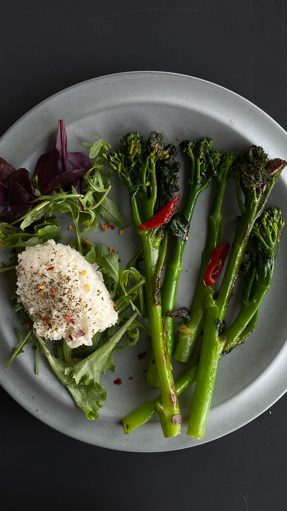
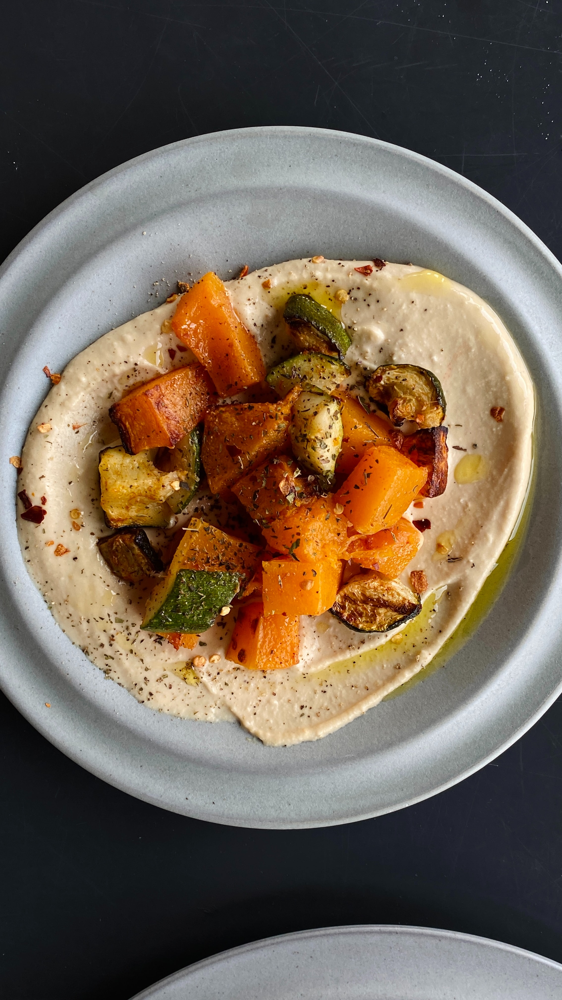
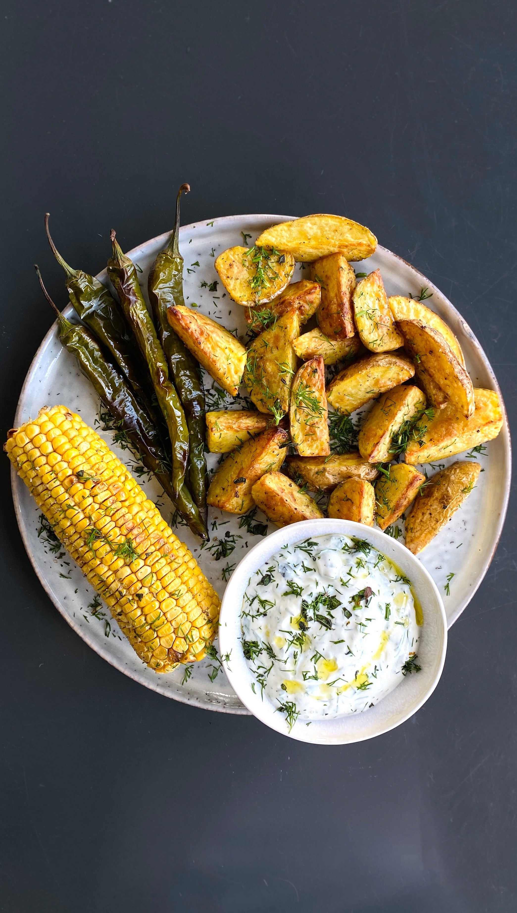

Desde el 2014, Bon goute cumple con los más altos estándares de calidad en materia de servicios de catering. Buscamos brindar un servicio de primera calidad, sorprendiendo a nuestros clientes con los mejores platillos y haciendo de los eventos momentos unicos e innolvidables. Más de 50 empresas nos eligen año tras año debido a nuestra calidad y profesionalismo.
Nuestro servicio de catering ofrece platillos unicos e inigualables. Apuntamos a brindar la mejor atencion junto con los mejores sabores, manteniendo una conducta honesta y responsable. Nos comprometemos con nuestros clientes, buscamos acompañarlos en su evento con entusiasmo y alegria, haciendo todo lo que este a nuestro alcance para que todos queden satisfechos. Ofrecemos un amplio menu y opciones de platillos para celiacos, veganos y vegetarianos. Contamos tambien con varias opciones dulces, con los mejores postres, tortas y dulces
Fideos a la bolognesa, especialidad de Bon gout.
Algunas de nuestras especialidades son los rollitos de jurel y espárragos verdes, pure de patatas con hummus y mondongo venezolano. Contamos con variedad de platillos llenos de sabor, unicos e inigualables. Podes elegir los siguientes platillos para incluir en el menu, combinarlos, o combinar cualquiera de las variedades que ofrecemos en nuestra carta. Para ver el catalogo completo de nuestras especialidades contactate con nosotros y te enviaremos por mail nuestras mejores opciones.
  No dudes en contactarnos para acceder al catalogo completo. Ofrecemos atencion al cliente de lunes a viernes a partir de las 9hs. Podes enviarnos un mail al correo: bongoute123123@gmail.com o comunicarte por WSP: 22121243234. ¡No dudes en contactarnos!